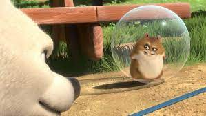
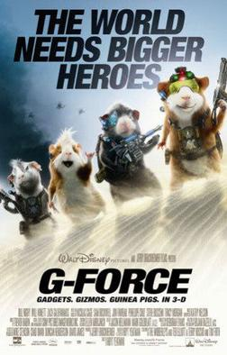

R.I.P pip
Pip was niet zomaar een hamster; hij was een lid van ons gezin. Zijn nieuwsgierigheid kende geen grenzen, en zijn kleine pootafdrukken zullen voor altijd in ons hart blijven. Van de momenten waarop hij zijn rad op topsnelheid draaide tot de avonden waarop we hem zachtjes aaiden terwijl hij in onze handen dutte, elke interactie met Pip was doordrenkt van liefde en vreugde.
Het was duidelijk dat Pip een passie had voor avontuur. Zijn hamsterballenraces en onbevangen exploratie van zijn kooi zorgden altijd voor glimlachen en gelach. Zelfs op de drukste dagen herinnerde Pip ons eraan om de eenvoudige vreugde van het moment te omarmen en het leven met een sprankje nieuwsgierigheid te benaderen.
Helaas hebben we onlangs afscheid moeten nemen van onze geliefde Pip. Zijn overlijden laat een leegte achter, maar we willen niet dat verdriet de overhand krijgt over de vreugdevolle herinneringen die hij ons heeft gegeven. We hebben Pip een rustplaats gegeven onder een bloeiende bloem, een plek waar zijn speelse geest voor altijd kan rusten.
pip was groot fan van de hit film G-FORCE(2009). heir is zijn review van de film: "G-Force" is een film die je als hamster niet wilt missen. Het is een avontuurlijke achtbaanrit met voldoende actie en humor om zelfs de meest kieskeurige hamster te vermaken. Als je een liefhebber bent van rollende knaagdieren, high-tech gadgets en een gezonde dosis knaagkracht, dan is "G-Force" een film die je moet toevoegen aan je kijklijst. Knabbeltastisch entertainment voor het hele gezin!